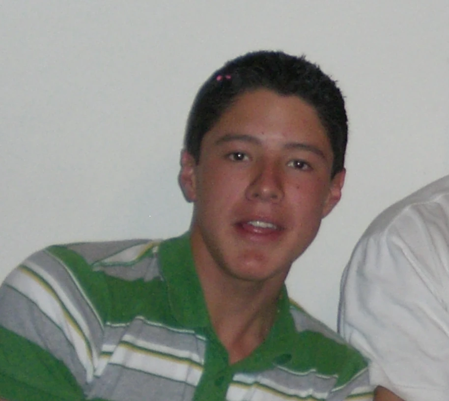
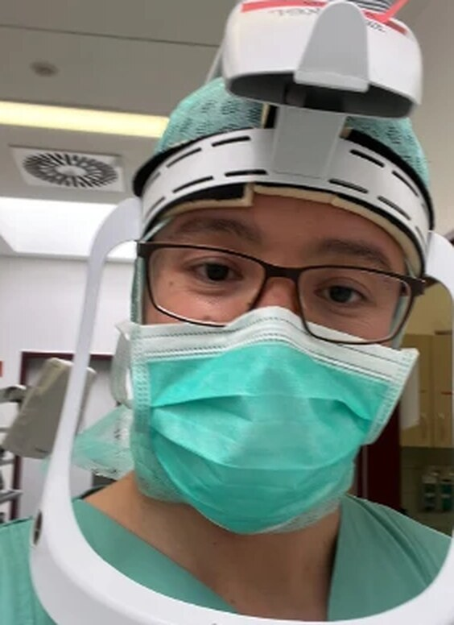

mi
historia.
antes
No tenía idea de por dónde empezar ni qué hacer.
Soy Ivan Bruckner Calahorrano, médico ecuatoriano. Me gradué en 2015 y ese mismo año llegué a Alemania. En 2017 obtuve la Approbation, hice mi especialidad y hoy trabajo como médico especialista en un hospital alemán.


después
Un plan claro y estructurado para enfrentar la burocracia alemana y ejecutar el proceso de homologación.